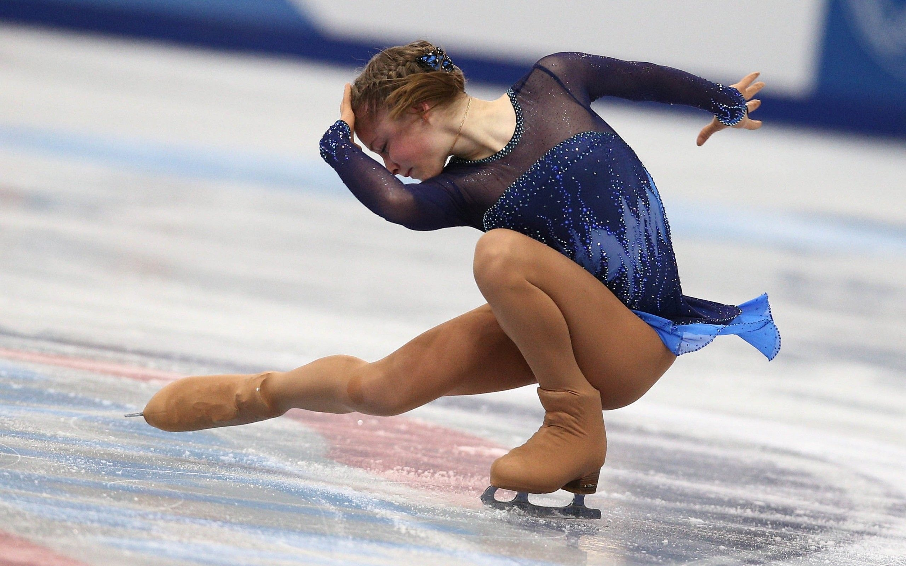
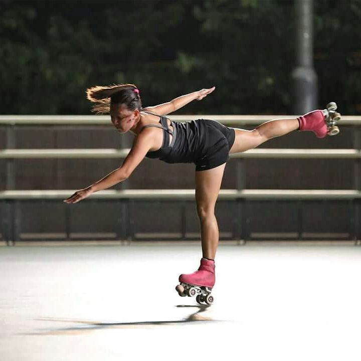
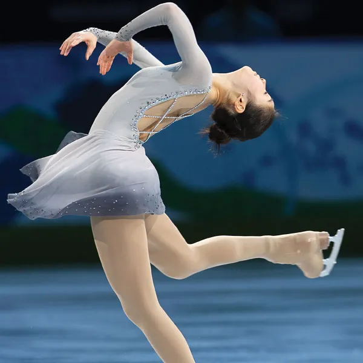
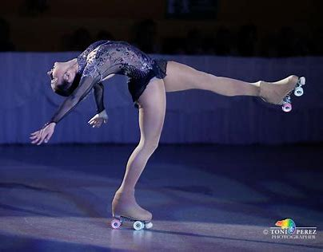
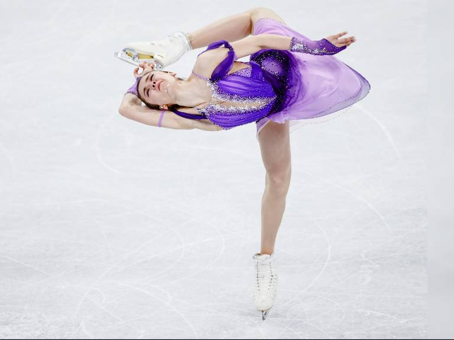
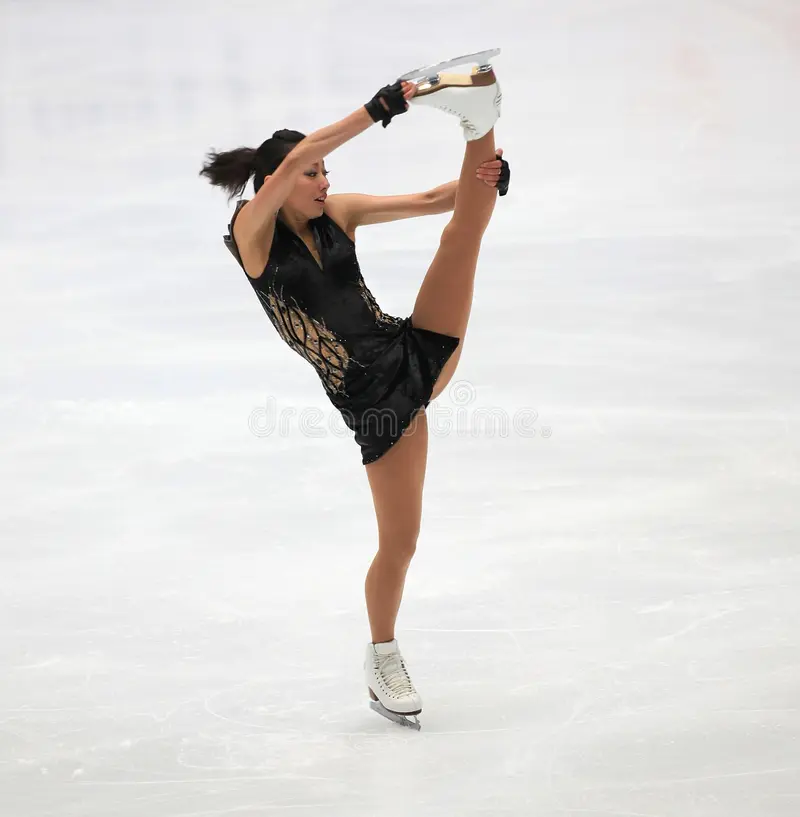

Los trompos en patin son giros que haces en un mismo lugar (centralizado) con un minimo de 3 vueltas/rotaciones (para confirmar), hay diferentes tipos de trompos:
- En dos piernas.
- Upright Spin.
- Broken Spin.
- Sit Spin.
- Inverted Spin.
- Camel Spin.
- LayBack.
- Split Spin.
- Donut Spin.
- Biellmann Spin
BROKEN
CAMEL
LAYBACK
INVERTED
DONUT
SPLIT
